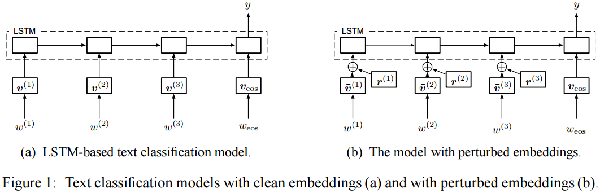
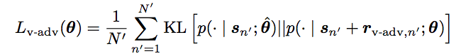
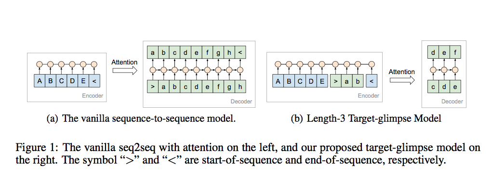
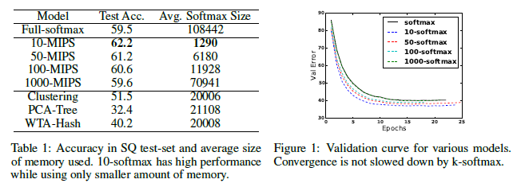
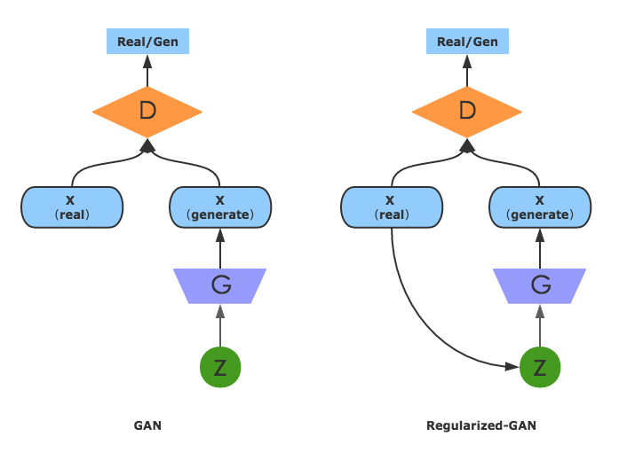
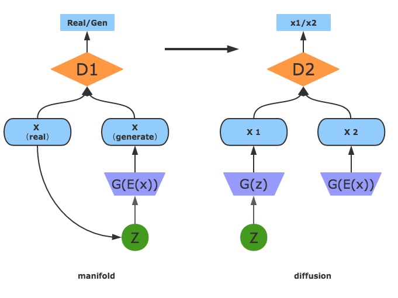

PaperWeekly 第十六期
引言
本期PaperWeekly将带着大家来看一下ICLR 2017的六篇paper，其中包括当下非常火热的GAN在NLP中的应用，开放域聊天机器人如何生成更长更丰富的回答，如何用强化学习来构建树结构的神经网络和层次化的记忆网络等内容。六篇paper分别是：
1、A SELF-ATTENTIVE SENTENCE EMBEDDING
2、Adversarial Training Methods for Semi-Supervised Text Classification
3、GENERATING LONG AND DIVERSE RESPONSES WITH NEURAL CONVERSATION MODELS
4、Hierarchical Memory Networks
5、Mode Regularized Generative Adversarial Networks
6、Learning to compose words into sentences with reinforcement learning
A SELF-ATTENTIVE SENTENCE EMBEDDING
作者
Zhouhan Lin, Minwei Feng, Cicero Nogueira dos Santos, Mo Yu, Bing Xiang, Bowen Zhou & Yoshua Bengio
单位
IBM Watson
Universit´e de Montr´eal
关键词
self-attention, sentence embedding, author profiling, sentiment classification, textual entailment
文章来源
ICLR 2017
问题
本文提出一种在没有额外输入的情况下如何利用attention来提高模型表现的句子表示方法。
模型
本文提出的模型结构分为两部分，
- BLSTM
这部分采用双向LSTM对输入的文本进行处理，最后得到BLSTM的所有隐层状态H。 - Self-attention mechanism
同attention机制类似，我们需要计算一个权重向量a，然后通过对隐层状态H加权求和得到句子的表示向量。这个过程如下公式所示：
但是实际任务中，我们通常可能会对一个句子语义的多个方面感兴趣，因此我们可以通过下面的公式，获得多个权重向量组成的矩阵A。
然后每一个权重向量a都可以得到一个句子表示向量v，所有句子表示向量组合在一起就可以获得句子表示矩阵M。
本文的模型在author profiling, sentiment classification和textual entailment三个任务上进行验证，都取得了较好的效果。
资源
1、[Yelp]
(https://www.yelp.com/dataset challenge)
2、 [SNLI]
(http://nlp.stanford.edu/projects/snli/)
相关工作
A large annotated
corpus for learning natural language inference
简评
本文提出的self-attention方法用一个matrix表示一个句子，并且matrix中的每一个vector都是句子语义某一方面的表示，增强了sentence embedding的可解释性。
Adversarial Training Methods for Semi-Supervised Text Classification
作者
Takeru Miyato, Andrew M. Dai, Ian Goodfellow
单位
Google Brain, Kyoto University和OpenAI
关键词
Adversarial training, text classification, semi-supervised learning
文章来源
ICLR 2017
问题
Adversarial training和virtual adversarial training都需要对输入的数字形式做小的perturbation，不适用于高维稀疏输入，比如one-hot word representations。文章扩展图像领域流行的这两种方法到文本领域，对word embedding进行perturbation来作为LSTM的输入，取代原本的输入向量。可以把这两种方法看做是正则化的方法，为输入加入噪声，可以用来实现semi-supervised的任务。
模型
以adversarial training为例，文章对word embeddings进行adversarial perturbation，而不是直接应用在输入上。假设normalized之后的输入序列为s，给定s，y的条件概率为p(y|s;theta)，其中theta为模型参数，则s上的adversarial perturbation r_adv为：
应用在LSTM上，如下图(b)所示。定义其adversarial loss如下：


其中N为labeled的例子的数目。通过随机梯度下降来进行training。
文章也提供了virtual adversarial training的方法。
资源
1、IMDB
2、Elec
3、Rotten Tomatoes
相关工作
主要列三篇work：
1、2015年NIPS, SA-LSTM。Semi-supervised sequence learning
2、2015年NIPS，One-hot CNN。Semi-supervised convolutional neural networks for text categorization via region
embedding
3、2016年ICML，One-hot bi-LSTM。Supervised and semi-supervised text categorization using LSTM for region
embeddings
简评
作者将图像领域的adversarial training应用在了文本领域，改善了word embedding。传统的word embedding被语法结构影响，即使两个完全相反的词（比如”good”和”bad”）在表示形式上也是相近的，没有表示出词本身的意思。Adversarial training使得有相近语法结构但是不同意义的词能够被分开，可以用来做情感分类和sequence model等。
GENERATING LONG AND DIVERSE RESPONSES WITH NEURAL CONVERSATION MODELS
作者
Louis Shao, Stephan Gouws, Denny Britz, Anna Goldie, Brian Strope, Ray Kurzweil1
单位
Google Research, Google Brain
关键词
Long and Diverse Responses
文章来源
ICLR 2017
问题
开放域聊天机器人如何生成更长且较为丰富的回答？
模型
本文模型是基于经典的seq2seq+attention框架，在其基础上进行了若干修改，得到了满意的效果。不同于之前模型的地方有两点：
1、encoder不仅仅包括整个source，还包括一部分target，这样attention不仅仅考虑了source，而且考虑了部分target。

经典的seq2seq+attention在decoding部分会将source中的每个token都考虑到attention中来，之前有一种做法是将整个target部分也加入到attention中，效果上虽然有一定的提升，但随着数据规模地增加，内存代价太大。本文正是针对这一个问题，提出了所谓的“glimpse”模型，如上图所示，在encoder部分加入了target的前几个token，相当于是上面两种方案的一种折中。
2、提出了一种基于sampling的beam search decoding方案。
经典的beam search在decoding部分，是基于MAP（最大后验概率）进行贪婪解码的，这种方案生成的responses具有简短、无信息量以及高频的特点，通俗地讲会生成很多的类似“呵呵”的话，没有太多营养和价值。(Jiwei Li,2015)在解决这个问题时，在decoding部分通过MMI（互信息）对N-best结果进行重排序，这种方法对于生成短文本效果显著，但对于生成长文本效果不佳。因为，基于MAP的beam search天然存在这样的问题，N-best和重排序都解决不了根本性的问题。针对这一问题，本文提出了一种基于sampling的beam search解码方案，sampling即在每一步解码时都sample出D个token作为候选，搜索完毕或达到预设的长度之后，生成B个候选responses，然后进行重排序。
本文的另外一大亮点是用了大量的对话数据，用了很大规模参数的模型进行了实验。实验评价标准，在自动评价这部分，设计了一个N选1的实验，给定一个输入，将正确输出和错误输出混在一起，模型需要从中选择正确的输出，用选择准确率来作为自动评价指标。本文没有用到经典的BLEU指标，因为这个指标确实不适合评价对话的生成质量。为了更有说服力，本文用人工对结果进行评价。
资源
本文用到的对话数据：
1、Reddit Data
2、2009 Open Subtitles data
3、Stack Exchange data
4、本文作者从Web抽取的对话数据（待公开）
相关工作
用seq2seq方法研究生成对话的质量（包括长度、多样性）的工作并不多，具有代表性的有下面两个工作：
1、Wu,2016 提出了用length-normalization的方案来生成更长的对话
2、Jiwei Li,2015 提出了在解码阶段用MMI（互信息）对N-best结果进行重排序，旨在获得信息量更大的对话。
简评
本文模型部分并没有太多的创新，因为是工业部门的paper，所以更多的是考虑实用性，即能否在大规模数据集上应用该模型，集中体现在glimpse模型上。为了生成更加长、更加多样性的对话，在原有beam search + 重排序的基础上，引入了sampling机制，给生成过程增加了更多的可能性，也是工程上的trick。对话效果的评价是一件很难的事情，人类希望bot可以生成类人的对话，回复的长度可以定量描述，但多样性、生动性、拟人化等等都难以定量描述，所以在探索生成对话的这个方向上还有很长的路要走。
Hierarchical Memory Networks
作者
Sarath Chandar, Sungjin Ahn, Hugo Larochelle, Pascal Vincent, Gerald Tesauro, Yoshua Bengio
单位
1、Université de Montréal, Canada.
2、Twitter Cortex, USA.
3、IBM Watson Research Center, USA.
4、CIFAR, Canada.
关键词
Hierarchical Memory Networks，Maximum Inner Product Search (MIPS)
文章来源
ICLR 2017
问题
记忆网络主要包括hard attention和soft attenion两种，然而hard不能用于反向传播算法进行端到端训练，所以只能使用强化学习的方法进行训练；soft所涉及的计算参数又很大，只适合于少量Memory。本文提出Hierarchical Memory Networks(HMN)模型，算是soft和hard的一个混合模型，计算量减少且训练更加容易，
实验结果也很好。
模型
soft attention是对所有的memory都要进行attention的计算，对全集计算使计算量很大。HMN利用层次化结构使得attention的集合缩小，利用MaximumInner Product Search(MIPS)的方法从全集中获得一个最优子集，在子集上面去做attention就大大降低计算量。这样的方式又和hard attention预测关注点的方法有些类似，将注意力放在最相关的那部分，这个的做法也更接近于人的注意力思维。 文章的核心部分在于如何获取与query最相近的子集。
主实验主要包括两个:
1、Exact K-MIPS：计算复杂度依然和soft attention差不多。
2、Approximate K-MIPS：利用Maximum Cosine Similarity Search(MCSS)的方法代替MIPS的方法，牺牲一些精确度，降低复杂度和加快训练速度。
MIPS有三种方法，分别是基于hash,基于tree,基于clustering，基于上述三种方法文中又做了几组组对比实验，最后实验结果显示基于clustering的效果是最好的。
文章得到的实验结果如下：

资源 （可选）
1、The SimpleQuestions dataset(使用的是Large-scale simple question answering with memory networks文章中的数据集)
2、babi
相关工作
1、arXiv 2014, soft attention,《Neural turing machines》
2、CoRR 2015, hard attention,《Reinforcement learning neural turing machine》
3、ICLR 2015, memory network,《Memory networks》
4、arXiv 2015,《End-to-end memory networks》,引入半监督记忆网络可以自学所需要的facts。
5、CoRR 2016, DMN, 《Dynamic memory networks for visual and textual question
answering》,增加了一个episodic memory 使得可以动态更新memory里面的内容。
简评
文章的创新主要在于修改了两个模块：Memory和Reader。
1、将memory的结构从a flat of array变成了hierarchical memory structure。将memory分成若干groups,这些groups又可以在进行更高级别的组合。
2、reader是从MIPS选出的子集中使用soft attention。MIPS从memory中选出一
个group子集作为最相关的子集。
Mode Regularized Generative Adversarial Networks
作者
Tong Che; Yanran Li
单位
Montreal Institute for Learning Algorithms;
Department of Computing, The Hong Kong Polytechnic University
关键词
GAN, Regularizers
文章来源
ICLR 2017
问题
本文针对的问题是：1、GAN 的训练过程很不稳定 2、GAN 生成的样本局限于训练样本中的大 model 上，不能平衡数据的分布（missing model problem）。
两个问题互相影响，导致训练结果不好。
模型
针对上面的问题，作者提出了两种 regularizers 去控制 GAN 的训练过程。
第一个 regularizer 也被作者称为 Regularized-GAN。作者认为可以从 generator 入手，给 generator 增加 regularizer，使得其具有更好的 gradient ，这样 G 和 D 都能稳定训练。
具体的方法是增加一个 encoder E(x) : X → Z.即把原先的 noise vector z 改为 z = encoder(X) ，即然后再 G(encoder(X))。如下图：

这样做有两个好处。第一，原始的模型很容易出现梯度消失的情况，因为 discriminator D 特别容易区分真实数据和生成数据导致 generator 就得不到 D 的梯度。作者的模型多了一个 reconstruction 的部分，这样生成出来数据不再那样容易被 D 识别出来。所以 D 和 G 就都能一直有 gradient 去训练，从而提高稳定性。第二，对于 x ，G(E(x)) 会尽量去生成 x 原本所属的类，从而一定程度解决了 missing model problem。
第二个 regularizer 基于第一个 regularizer 旨在改进训练的方法，也被作者称为 manifold-diffusion GAN。分为两步，第一步 manifold step 训练 discriminator D1 ，目的是减少 G(Enc(X)) 和 X 的的差别；第二步 diffusion 就是训练 D2 让 G(Enc(X)) 和 G(z) 分布的距离接近。如下图：

最后，作者把 GAN 的网络训练坍塌的情况考虑进去，提出了新的 evaluation metric。
相关工作
本篇文章的作者李嫣然写过一篇非常棒的综述 ,在这里就不累赘阐述了。
简评
当下 GAN 的研究非常火爆，出现了许许多多对 GAN 的改进，本篇文章的提出的两种 regularizers 非常有效的提高了 GAN 的稳定性（其中 regularizer 的思想也受到了监督学习的启发），值得对 GAN 感兴趣的同学研读。
完成人信息
professorshui@gmail.com
Learning to compose words into sentences with reinforcement learning
作者
Dani Yogatama, Phil Blunsom, Chris Dyer, Edward Grefenstette, Wang Ling
单位
关键词
Tree-LSTM, Reinforcement Learning
文章来源
ICLR 2017
问题
使用强化学习来构建树结构的神经网络Tree-LSTM，学习自然语言的句子表示
模型
模型分为两部分：Tree-LSTM和强化学习模型
应用Tree-LSTM(可以通过LSTM的忘记门机制，跳过整棵对结果影响不大的子树)，并结合{SHIFT，REDUCE}操作，SHIFT操作对应将一个节点压入栈，REDUCE对应将两个元素组合，从而建立树结构
强化学习用来寻找最佳的节点组合情况，RL模型中的状态s即当前构建的树结构，a为{SHIFT，REDUCE}操作，reward对应不同downstream
task(例：若是用该句子表示进行分类任务，则r对应从策略网络中采样得到句子表示的分类准确性的概率)
资源
作者将该工作进行了四组实验，情感分类，语义相关性判断，自然语言推理，句子生成
分别应用Stanford Sentiment Treebank，Sentences Involving Compositional Knowledge corpus，Stanford Natural Language Inference corpus，IMDB movie review corpus
相关工作
与Socher等人之前提出的Recursive NN,MV-RNN,RNTN，Tree-LSTM等工作一脉相承，本文又加入了RL方式构建树形结构
简评
将强化学习引入句子表示学习之中，学习构建树的不同方式，从左向右，从右向左，双向，有监督、半监督、预先无结构等方式去构建树结构，但是训练时间较长，在几个任务上效果提升不是特别明显。
总结
GAN是当下的研究热点之一，在图像领域中研究较多，本期的两篇paper探讨了GAN在NLP中的应用，值得关注和期待。最后感谢@destinwang、@gcyydxf、@chunhualiu、@tonya、@suhui和@zhangjun六位童鞋的辛勤工作。